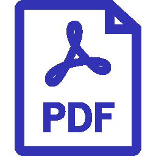

Software Supply Chain Security
What are we doing?
In an era where software systems underpin critical infrastructure, ensuring their security and reliability is paramount. However, the evolving complexity of modern software poses significant challenges for traditional security measures. Our project is dedicated to fortifying software security and reliability through a multifaceted approach that integrates cutting-edge techniques and methodologies. We focus on leveraging advanced technologies such as Large Language Models (LLMs) and Static Program Analysis to safeguard individual program and software supply chains against a wide range of security threats. Ultimately, our goal is to empower organizations to proactively identify, mitigate, and prevent security threats, thereby safeguarding critical infrastructure, sensitive data, and user privacy.
Recent Updates
- Mar, 2024 Our papers "API Misuse Detection via Probabilistic Graphical Model" and "Model-less Is The Best Model: Generating Pure Code Implementations to Replace On-device DL Models" have been accepted by ISSTA 2024 research paper track.
- Mar, 2024 Our SANER'24 paper "Investigating and Detecting Silent Bugs in PyTorch Programs" won IEEE TCSE Distinguished Paper Award.
- Jan, 2024 our paper "ProveNFix: Temporal Property guided Program Repair" has been accepted by the FSE'24 research papers track.
- Aug, 2023 our paper "Automated Fixing of Web UI Tests via Iterative Element Matching" has been accepted by the ASE'23 research papers track.
- Dec, 2022 our paper "Template-based Neural Program Repair" has been accepted by the ICSE'23 technical track.
- Dec, 2022 our paper "A Collaboration-Aware Approach to Profiling Developer Expertise with Cross-Community Data" has been accepted by the QRS'22 regular papers track.
- Jul, 2022 Wang Jing has successfully defended her master thesis, and won Outstanding Graduates award of Beihang University. She is moving to Bank of China.
- Jun, 2022 Yongqiang's work on developer portrait has beed accepted by Huawei OpenEuler Community.
- Apr, 2022 our paper "Program Vulnerability Repair via Inductive Inference" has been accepted by the ISSTA'22 technical papers track.
- Dec, 2021 our paper "Improving Fault Localization and Program Repair with Deep Semantic Features and Transferred Knowledge." has been accepted by the ICSE'22 technical papers track.
Current Projects
Software Supply Chain security
Software supply chains play a critical role in delivering reliable and secure software products to end-users. However, recent high-profile security breaches and supply chain attacks have highlighted the vulnerabilities inherent in these systems. This project focuses on enhancing software supply chain security through innovative techniques such as fine-grained program dependency construction, clone detection, vulnerability recognization, vulnerability propagation analysis, security pre-warning, and more. The ultimate goal of this project aligns closely with the principles of AppSecOps, aiming to integrate security practices into the application development and operations processes to enhance the security of software applications throughout their lifecycle. We aims to help organizations build and deploy more secure, resilient, and reliable software applications in today's rapidly evolving threat landscape.
LLM for software security analysis
In response to security and reliability issue in individual programs and software supply chain, this project harnesses the power of Large Language Models (LLMs) to revolutionize software security practices. This project aims to develop an advanced software security solution that leverages LLMs to automate and enhance test case generation, vulnerability detection, localization, and repair processes. By harnessing the immense language understanding capabilities of LLMs, we seek to significantly improve the efficiency, accuracy, and scalability of software security practices.
Static program analysis based on CPG
Beyond LLM, we are also working on defect and vulnerability detection based on static program analysis. Our project aims to develop an advanced software quality assurance solution that leverages Code Property Graph (CPG) analysis techniques to automate and enhance defect and vulnerability detection processes. By analyzing the control flow, data flow, and inter-module dependencies within software systems, we seek to identify potential defects, vulnerabilities, and security weaknesses with unprecedented accuracy and efficiency. Specifically, we design algorithm for storing CPG data, efficient strategies for querying CPG, and user-friendly DSL for defining querying patterns. We aim to support various types of program languages, including C, Java, Python and ArkTS.
Publications
Selected Research Papers
-
Enhancing Automated Vulnerability Repair through Dependency Embedding and Pattern Store
Qingao Dong, Yuanzhang Lin, Xiang Gao, Hailong Sun.IEEE International Conference on Software Analysis, Evolution and Reengineering (SANER), 2025.
-
Understanding vulnerabilities in software supply chains
Yijun Shen, Xiang Gao, Hailong Sun, Yu Guo.Empirical Software Engineering (EMSE), 2025.
-
DynaMO: Protecting Mobile DL Models through Coupling Obfuscated DL Operators
Mingyi Zhou, Xiang Gao, Xiao Chen, Chunyang Chen, John Grundy, Li Li.International Conference on Automated Software Engineering (ASE), 2024.
-
LLM-Based Java Concurrent Program to ArkTS Converter
Runlin Liu, Yuhang Lin, Yunge Hu, Zhe Zhang, Xiang Gao.International Conference on Automated Software Engineering Tool (ASE), 2024.
-
API Misuse Detection via Probabilistic Graphical Model
Yunlong Ma, Wentong Tian, Xiang Gao, Hailong Sun, Li Li.International Symposium on Software Testing and Analysis (ISSTA), 2024.
-
ProveNFix: Temporal Property guided Program Repair 
Yahui Song, Xiang Gao, Wenhua Li, Wei Ngan Chin, Abhik Roychoudhury.International Conference on the Foundations of Software Engineering (FSE), 2024.
-
Investigating and Detecting Silent Bugs in PyTorch Programs
Shuo Hong, Hailong Sun, Xiang Gao#, Shin Hwei Tan.International Conference on Software Analysis, Evolution and Reengineering (SANER), 2024.
-
Reducing False Positives of Static Bug Detectors through Code Representation Learning
Yixin Yang, Ming Wen, Xiang Gao, Yuting Zhang, Hailong Sun.International Conference on Software Analysis, Evolution and Reengineering (SANER), 2024.
-
Automated Fixing of Web UI Tests via Iterative Element Matching
Yuanzhang Lin, Guoyao Wen, Xiang Gao.
International Conference on Automated Software Engineering (ASE) 2023, 2023.
-
Automated Repair of Programs from Large Language Models
Zhiyu Fan, Xiang Gao#, Martin Mirchev, Abhik Roychoudhury, Shin Hwei Tan.
International Conference on Software Engineering (ICSE) 2023, 2023.
-
Template-based Neural Program Repair
Xiangxin Meng, Xu Wang, Hongyu Zhang, Hailong Sun, Xudong Liu, Chunming Hu.The 45th International Conference on Software Engineering (ICSE), 2023.
-
A Collaboration-Aware Approach to Profiling Developer Expertise with Cross-Community Data
Xiaotao Song, Jiafei Yan, Yuexin Huang, Hailong Sun, Hongyu Zhang.The 22nd IEEE International Conference on Software Quality, Reliability, and Security (QRS), 2022.
-
Patching Weak Convolutional Neural Network Models through Modularization and Composition
Binhang Qi, Hailong Sun, Xiang Gao, Hongyu Zhang.IEEE/ACM International Conference on Automated Software Engineering (ASE), 2022.
-
Program Vulnerability Repair via Inductive Inference
Yuntong Zhang, Xiang Gao, Gregory J. Duck, Abhik Roychoudhury.ACM International Symposium on Software Testing and Analysis (ISSTA), 2022.
-
Improving Fault Localization and Program Repair with Deep Semantic Features and Transferred Knowledge
Xiangxin Meng, Xu Wang, Hongyu Zhang, Hailong Sun, Xudong Liu.The 44th International Conference on Software Engineering (ICSE), 2022.
-
APIfix: Output-Oriented Program Synthesis for Combating Breaking Changes in Libraries
Xiang Gao, Arjun Radhakrishna, Gustavo Soares, Ridwan Shariffdeen, Sumit Gulwani, Abhik Roychoudhury.Object-Oriented Programming, Systems, Languages, and Applications (OOPSLA), 2021.
-
Automated Patch Backporting in Linux (Experience Paper)
Ridwan Shariffdeen, Xiang Gao, Gregory J. Duck, Shin Hwei Tan, Julia Lawall, Abhik Roychoudhury.International Symposium on Software Testing and Analysis (ISSTA), 2021.
-
Learning to Handle Exceptions
Jian Zhang, Xu Wang, Hongyu Zhang, Hailong Sun, Yanjun Pu, Xudong Liu.The 35th IEEE/ACM International Conference on Automated Software Engineering (ASE), 2020.
-
Retrieval-based Neural Source Code Summarization
Jian Zhang, Xu Wang, Hongyu Zhang, Hailong Sun, Xudong Liu.The 42nd International Conference on Software Engineering (ICSE), 2020.
IEEE TCSE Distinguished Paper Award
Distinguished Artifact Award
Our Team
Faculty
Students
Ph.D. Students

Yijun Shen
Ph.D. 2020
Software Supply Chain

Liyou Chen
Ph.D. 2022
Vulnerability recognization

Wentong Tian
Ph.D. 2022
LLM for vulnerability analysis
Yunlong Ma
Ph.D. 2022
Combining static analysis with LLM

Qingao Dong
Ph.D. 2022
Vulnerability Repair

Yuanzhang Lin
Ph.D. 2023
UI Testing

Yixin Yang
Ph.D. 2023
Vulnerability detection
Chenfan Li
Ph.D. 2024
TBD
Master's Students
Zhe Zhang
Master 2023
Fuzzing

Bowen Xu
Master 2023
LLM for vulnerability analysis
Hao Gao
Master 2023
LLM for code generation
Yi Xu
Master 2023
Software Supply Chain
Yu Guo
Master 2023
Software Supply Chain
Zuozhou Zhang
Master 2023
Software Supply Chain
Yifan An
Master 2024
TBD
Xingyu Liu
Master 2024
TBD
Rui He
Master 2024
TBD
Chang Liu
Master 2024
TBD
Xingjing Deng
Master 2024
Static program analysis
Former Students

Chongpeng Li
Master 2020

Yongqiang Yang
Master 2020

Haoqian He
Master 2020
Jingyue Wang
Master 2020
Chunyi Xu
Master 2021
Moved to Agricultural Bank of China

Rui Sui
Master 2021
Moved to Agricultural Bank of China
Shuo Hong
Master 2022
Move to MiHoYo